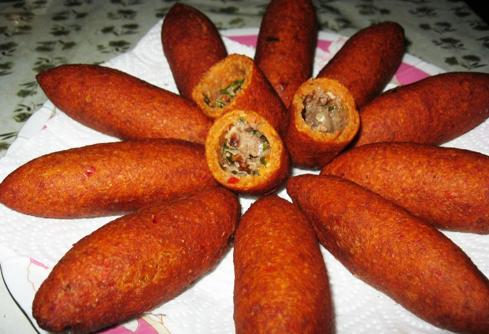
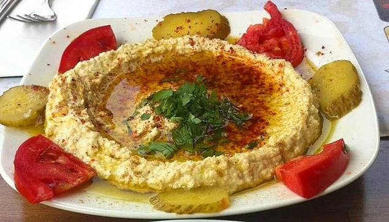

|
ORUK

HUMUS

Tacettin master, the living legends of Antakya. You will not be able to eat at all before you print the name on the list. It's not a joke! The name of the person who came from the name printing did not return. "Is there really such a thing?" He asked, "He is human, you too. What difference do you have? I put my son in the queue, "he said.
Tacettin master, 70 years old, has been doing this business for 57 years. Cumin, parsley and chili are amazing! It is all beef because the small animal is not preferred much in the region. You have 6 percent of the tail fat, be your knowledge. The clock starts at 12 and ends at 15-16.